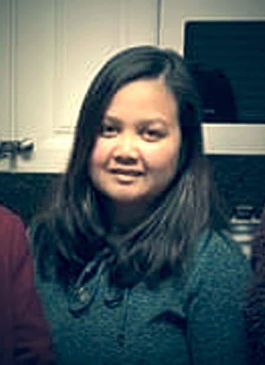
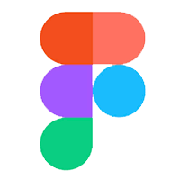

BookMe - Mobile App Design
UXUI Development
BookMe mobile design for planning and finding local events.
This app is inspired by the daily struggles we have when it comes to finding local events in our area or simply trying to organize one. Even after an event is set you will receive multiple texts for questions. I want to create an app that will elimate the countless hours of searching online for the best restaurant around town. Make get togethers less stressful than it should be and create better communication within friends and family.
What are we building
An app that will make event planning and finding events easy to use and very convenient. With just one tap of a button you can open doors to a number of events in your local area as well as other locations. Once you book an event you can easily send invites to your friends and family. Sending updates and communicating has never been easier. Everything is located all in one app with real time notification so no one will any changes or updates.
How are we building it
This BookMe prototype is a gateway to an app that can help many in their day to day. Due to the high usage of mobile device, this app is best suitable as a mobile app. It is something that can be easily installed on your device and carry anywhere you go. As you are looking for nearby events it becomes a very covenient go to tool that will guide you to where you want to be.
Why are we building it
I'm sure there have been many times where someone has asked you "where should we meet?" or "what should be do today?" Put yourself in the shoe of a fulltime employee who has been working for 12 hours and at the end of the day all she wants to do is meet up with a couple of friends but does not have enough time to plan anything. This app will help solve the stress that comes with our busy life.
Personas
Czarinah, 29
OccupationEvent Coordinator
LocationNew York, NY
StatusIn a relationship
Interest & Hobbies Czarinah loves the outdoors. Occasionally on her off days she likes to go hiking and explore her own city. During the holidays or a long weekend off, Czarinah aways travels to new places. One of her goal when it comes to a new place is to find the best place for food.
Frustrations :Travelling is a time for relaxing but you can not avoid the headache of planning. Czarinah often spends a good amount of time looking for a restaurant or finding the best place in a crowded city.
Goal :To easily find events and popular places when she is travelling. Instead of spending time looking for a place, she wants something that is conveniently available for her.
Tin, 22
OccupationStudent
LocationSan Diego, CA
StatusSingle
Interest & HobbiesTin is in his second year of college and he is enjoying the life of a student. Often during the holidays and after every exam Tin likes to celebrate with his friends by going to restaurants and bars.
Frustrations :Prepping for exams is always stressfull. Who has time to plan an event during these busy times. Tin would like something that has all the local events in his mobile device as well as something that is ready to use at anytime to let the stress of finals off.
Goal :A convenient way to communicate with his friends when it comes to getting togather. Planning events should be easy and always ready to use.
Jen, 40

OccupationBlogger
LocationLos Angeles, CA
StatusMarried, 2 Kids
Interest & HobbiesJen use to live in San Diego however has now moved to Los Angeles due to her work. Her work is very flexible but requires a lot of time as she she needs to constanly produce content as a blogger. During her off days she likes to spend the day in LA looking for events to write about or drive down to her home town and look for events there.
Frustrations :Los Angeles and San Diego are busy cities. There are always events happening and often they happen at the same time. Jen wants to find the best events around town however it is difficult to choose as there are so many.
Goal :A tool that will help her find events and locations that is the buzz of town so she can write about it in her blog.
FEATURES
- Easy to Use
- Convenient
- Real Time Updates
- Fun Interactive Design
- Simplicity
- Data Driven
PROTOTYPE
UI Process

UI Sketches
Figma
The platform I chose for this project is Figma. It contains easy to use tool for creating prototypes and wireframes. It does not require any download and can be accessed by anyone at any time making sharing simple. Figma contains features such as flexible design styles, interaction capabilities, omptimized for mobile, and more. It provided the necessary tools to create this project and allowed me to explore the dynamics of prototyping in a different level.
- Figma
 -
- Numerous Design Features
- Scalable Design
- Convenient Design System
- Plugin Enabled
- Easy Collaboration
FINAL DESIGN